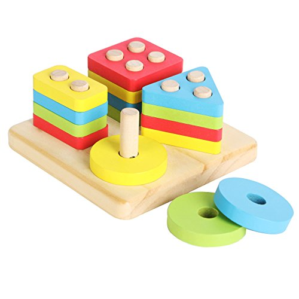

lein new training cd training tree cat project.clj cat src/training/core.clj
Enterprise Clojure Training
Contents
Introductions
Clojure

What language is it that meets all the criteria? What language would I choose if I had to choose today? Probably Clojure!
— Robert Martin
Clojure
Data
Functions
A tool for thought
Getting stuff done
1. The Clojure Ecosystem
Integrity is an ecosystem.
— Michael Leunig
Dependencies
Libraries are plain old jars
Clojure is itself a jar
Clojure can make direct use of other jars
Easy to deploy
Leiningen
Leiningen
tree
.
├── CHANGELOG.md
├── doc
│ └── intro.md
├── LICENSE
├── project.clj
├── README.md
├── resources
├── src
│ └── training
│ └── core.clj
└── test
└── training
└── core_test.cljproject.clj
(defproject training "0.1.0-SNAPSHOT"
:description "FIXME: write description"
:url "http://example.com/FIXME"
:license
{:name "Eclipse Public License"
:url "http://www.eclipse.org/legal/epl-v10.html"}
:dependencies [[org.clojure/clojure "1.8.0"]])src/training/core.clj
(ns training.core)
(defn foo
"I don't do a whole lot."
[x]
(println x "Hello, World!"))The Read Eval Print Loop (REPL)
$ lein repl
We type in an expression:
(+ 1 2)
Clojure returns a result:
=> 3
Repeat
⇒ means evaluates to |
Editor setup
IntelliJ IDEA + Cursive
Wide range of editor support options
Exercises
See manual end of section 1
Answers
(+ 2 3) => 5
(* 31 79) => 2449
(/ 10 2) => 5
(/ 2 10) => 1/5
Answers
(+ 1 2 3) => 6
(println "hello world") => "hello world"
(* 5 4 3 2 1) => 120
2. Clojure Syntax
If the syntax is good enough for the information, it should be good enough for the meta-information.
— Erik Naggum
| Java | Clojure |
|---|---|
int i = 5; | (def i 5) |
if (x == 1) return y; else return z; | (if (= x 1) y z) |
x * y * z; | (* x y z) |
foo(x, y, z); | (foo x y z) |
foo.bar(x); | (.bar foo x) |
Lists
Evaluated as function calls
(inc 1) => 2
Invoking functions
(+ 1 2) => 3
Always in prefix form
Empty list
() => ()
Making lists
(cons 1 ()) => (1)
(cons 1 (cons 2 ()) => (1 2)
(list 1 2 3) => (1 2 3)
Vectors
[1 2 3 4]
Preferred over lists; easier to write
Order 1 count and lookup by index
(get [1 2 3 4 5] 3) => 4
Similar to arrays, but can be added to
Vector operations
(conj [1 2 3] 4) => [1 2 3 4]
(pop [1 2 3 4]) => [1 2 3]
(assoc [1 2 3 4] 0 5) => [5 2 3 4]
(vec (list 1 2 3 4)) => [1 2 3 4]
(cons 5 [1 2 3 4]) => (5 1 2 3 4)
Equality by value
(def a [1 2 3 4]) (= a a) => true
(def b [1 2 3 4]) (= a b) => true
a and b are different objects |
(identical? a b) => false
Sequential equality
(= [1 2 3 4] (list 1 2 3 4)) => true
Different types, but considered equal
Symbols
Usually
lowercase-words-hyphenatedBegin with an alphabet character
Can contain numbers and punctuation
Identifiers
Resolving symbols
inc => #object[clojure.core$inc]
foo => Exception: Unable to resolve symbol foo
(quote foo) => foo
'foo => foo
quote means don’t resolve or evaluate
Quote also works on lists
(quote (1 2)) => (1 2)
'(1 2) => (1 2)
Prevents invoking 1 as a function
(1 2) Exception: Long cannot be cast to IFn
| Type | Value |
|---|---|
Long | 1 |
Double | 3.14 |
BigInteger | 1000000000000N |
BigDecimal | 1000000000000.1M |
Exponents | 1e3 |
Ratio | 2/5 |
Strings and characters
"This is a string."
Characters written with a backslash
\a \b \c \newline \tab \space
Maps
{"name" "Fate of the Furious"
"sequence-number" 8
"rotten-tomatoes" 0.66
"imdb" 0.67}Order 1 lookup, "add", "delete" by key
Tuned to be fast
Replacement for structs/objects
Versatile; used often in Clojure code
Keywords
:my-keywordShorthand identifiers
Begin with a colon
Often used as keys in hashmaps
{:name "Fate of the Furious"
:sequence-number 8
:rotten-tomatoes 0.66
:imdb 0.67}Map operations
(get {:a 1} :a)
=> 1(get {:a 1} :b 2)
=> 2(assoc {:a 1} :b 2)
=> {:a 1, :b 2}(dissoc {:a 1} :a)
=> {}(merge {:a 1} {:b 2})
=> {:a 1, :b 2}Commas
Commas are optional and treated as whitespace
(= {:a 1, :b 2, :c 3}
{:a 1 :b 2 :c 3})Prefer newlines
{:a 1
:b 2
:c 3}Nesting datastructures
{:name "Fate of the Furious"
:sequence-number 8
:ratings {:rotten-tomatoes 0.66
:imdb 0.67}}Ratings are a nested map
{[1 2] {:name "diamond", :type :treasure}
[3 4] {:name "dragon", :type :monster}}A map with vector coordinate keys, and map values
Nested updates
(update {:a 2} :a inc)
=> {:a 3}(update {:a [1 2 3]} :a conj 4)
=> {:a [1 2 3 4]}(assoc-in {:a {:b {:c 1}}} :d 2)
=> {:a {:b {:c 1, :d 2}}}(update-in {:a {:b {:c 1}}} [:a :b :c] inc)
=> {:a {:b {:c 2}}}(get-in {:a {:b {:c 1}}} [:a :b :c])Sets
#{1 2 3}Near constant time lookup
(contains? #{1 2 3} 3)
=> trueSet operations
(conj #{1 2 3} 4)
=> #{1 2 3 4}(disj #{1 2 3} 2)
=> #{1 3}union, difference and intersection are available in the clojure.set namespace
Namespaces
src/training/my_namespace.clj
(ns training.my-namespace
(:require [clojure.set :as set])
(:import (java.time Instant Duration)))
(set/union #{1 2 3} #{3 4})
=> #{1 2 3 4}The name must match path and filename
my-namespace→my_namespace.cljtraining.→training/
From the REPL
(require '[clojure.set :as set]) (import (use 'clojure.set) (require '[clojure.set :refer :all])
Avoid use and :refer :all |
ns works in the REPL! |
(ns training.my-namespace (:require [clojure.set :as set]))
Programs
Expressions which are evaluated to results
If an expression needs to be compiled, it will be
Can be loaded from files or evaluated dynamically
Unit of compilation is a form
Nominate an entry point namespace/function
Namespaced keywords
:my.namespace/rect
::rect => :my.namespace/rect
:: is shorthand for current namespace
Defining functions
(defn square [x] (* x x))
(defn square "Multiplies a number by itself" [x] (* x x))
Defining Vars
(def x 1) => #'user/x
#'user/x is shorthand for (var user/x)
x => 1
Global mutable reference
Use sparingly
Defining Vars continued
The symbol
xresolves to a VarVars are automatically dereferenced when evaluated
Dereferrencing returns the value associated with the Var
Avoid using vars like variables
defnis actuallydefwith a function valueCan use
#'xor(var x)to access the Var
Let
(let [x 1] (inc x)) => 2
Bind symbols to values in a scope
Shadow existing bindings
Prefer
letoverdef
Destructuring (binding forms)
(let [[x y] [1 2]] (+ x y)) => 3
Literal data structure containing symbols
Matches structure
Why destructure?
(defn normalize1 [v]
(let [x (first v)
y (second v)
length (Math/sqrt (+ (* x x) (* y y)))]
[(/ x length) (/ y length)]))Avoid extracting substructure manually:
(defn normalize2 [[x y]]
(let [length (Math/sqrt (+ (* x x) (* y y)))]
[(/ x length) (/ y length)]))Vector structures match any sequence
(let [[a b] (list 1 2)] b) => 2
Strings and Collections (list, vector, set, map) implement seq
(seq "abc") => (\a \b \c)
(seq {:a 1, :b 2, :c 3})
=> ([:a 1] [:b 2] [:c 3])(seq? 8) => false
(let [[a b] "abc"] b) => \b
Basic sequences
(drop 2 [0 0 0 0]) => (0 0)
(range 5) => (0 1 2 3 4)
(take 2 "abcd") => (\a \b)
Many sequence oriented functions
Never modify the original sequence
Often lazy
Lazy sequences
Lazy means that the next value in the sequence is only calculated when it is made use of
Stream abstraction; only the currently used item needs to be in memory
Useful for processing files that don’t fit in memory
For expressions
(for [i (range 10)] (* i i)) => (0 1 4 9 16 25 36 49 64 81)
(for [file ["a" "b" "c" "d"]
rank (range 1 9)]
(str file rank))
=> ("a1" "a2" ... "a8" "b1" ... "d8")(for [i (range 10)
:when (odd? i)
:let [square (* i i)]
square)
=> (1 9 25 49 81)Destructuring in a for expression
(let [m {:a 1, :b 2, :c 3}]
(for [[k v] m]
[v k]))
=> ([1 :a] [2 :b] [3 :c])| Destructuring is available in any binding form |
Variadic functions using &
(defn sub [& vs] vs)
(sub 1 2 3 4) => (1 2 3 4)
Variadic means variable number of arguments
Arity means number of arguments
We could have just passed a vector instead
Apply
Calls a function with a sequence of arguments
(apply + [1 2 3 4]) => 10
Most mathematical functions are variadic:
(+ 1 2 3) => 6
Destructuring a map
(def x {:a 10
:b 20})(let [{a :a, b :b} x]
(+ a b))
=> 30(let [{:keys [a b]} x]
(+ a b))
=> 30Destructuring strings from a map
(def y {"a" 10
"b" 20})(let [{a "a", b "b"} y]
(+ a b))
=> 30(let [{:strs [a b]} y]
(+ a b))
=> 30Destructuring a sequence:
(def x (range 5))
(first x) => 0
(rest x) => (1 2 3 4)
(let [[a & more] (range 5)] a) => 0
(let [[a & more] (range 5)] more) => (1 2 3 4)
Nested destructuring
(def movie {:name "Fate of the Furious"
:sequence-number 8
:ratings {:rotten-tomatoes 0.66
:imdb 0.67}})(get-in movie [:ratings :imdb]) => 0.67
(let [{{:keys [imdb]} :ratings} movie]
imdb)
=> 0.67More destructuring
(defn f [{:keys [a b] :as x}]
x)
(f {})
=> {}Destructuring with defaults
(defn f [{:keys [a b] :or {a "default"}}]
a)
(f {})
=> "default"(defn f [x]
(let [defaults {:a "default"}]
{:keys [a b]} (merge defaults x)]
a))
(f {})
=> "default"Bug eye comments
Removal of next form #_
#_(this form is removed) #_#_ (ignored-1) (ignored-2)
Temporarily remove a form when debugging code
Looks like a bug eyes emoji
Regex
#"pattern"
(re-seq #"\w+" "the quick brown fox")
=> ("the" "quick" "brown" "fox")Exercises
See manual end of section 2
Answers
Set up the new namespace called training.syntax
(ns training.syntax) => nil
Define a var called message bound to the string "greetings"
(def message "greetings") => #'hello-clojure/message
Answers
Print out the value of the var message
(prn message) => "greetings" nil
prn keeps the quotes around strings; println does not |
Answers
Create a let binding that binds the symbol message to "well hello there", and prints out message inside the let block:
(let [message "well hello there"] (prn message)) => "well hello there" nil
Print out message again, outside of the let block:
(prn message) => "greetings"
message global var is still the original value |
Answers
Create a let binding that destructures a map and prints the greeting and tone:
(def m {:greeting "good morning", :tone "happy"})(let [{:keys [greeting tone]} m]
(prn greeting tone))
=> "good morning" "happy"Answers
Destructure a single map input and return a string combining greeting and tone:
(defn hi [{:keys [greeting tone]}]
(str greeting " - " tone))(hi m) => "good morning - happy"
3. Functions
The chief function of the body is to carry the brain around.
— Thomas A. Edison
Defining functions
(defn square [x] (* x x))
(defn square "Multiplies a number by itself" [x] (* x x))
Functions continued
All functions return the last expression as a result
Defn creates a var
(square 2) => 4
Mathematical operators in prefix notation
(+ (square 2) (square 3)) => 13
Arguments are evaluated from left to right before the function is called
Unnamed functions
(fn [a] (inc a))
#(inc %)
Unnamed; anonymous; Lambda (λ) expression
Invoking anonymous functions
((fn [a] (inc a)) 1) =>2
(#(inc %) 1) => 2
Just like a named function; first item in a list is applied
Closure
Function that captures values from the environment
(let [who "world"]
(defn greet []
(str "Hello " who)))
(greet)
=> "Hello world"Passing a function to another function
(defn do-triple [f] (f) (f) (f))
(do-triple #(print "hot ")) => hot hot hot nil
Functions are values
Can be passed to other functions
Functions that take a function are called "higher order functions"
Mapping a function over a sequence
map the function, not hash-map the data structure |
Function that applies a function to every element in a sequence
(map inc [1 2 3]) => (2 3 4)
(map (fn [x] (* x x)) [1 2 3 4]) => (1 4 9 16)
Don’t need to create global definitions
Map
(defn greet-them [person] (str "Hello " person))
(map greet-them ["Alice" "Bob" "Carol"])
=> ("Hello Alice" "Hello Bob" "Hello Carol")Using pre-defined functions is easy and readable
Map
(let [x 5] (map #(+ x %) [1 2 3])) => (6 7 8)
Higher order function
Closure as argument to higher order function
Source of expressiveness
Inline named functions
(fn add-one [x] (inc x))
add-one => Unable to resolve symbol: add-one in this context
Does not create a global var
Documents purpose
Name appears in stacktraces (searchable clue)
The function can call itself
Named functions
(defn f [x] (inc x))
Is shorthand for
(def f
(fn [x]
(inc x)))Variadic arguments
(defn f [& args] args)
(f 1 2 3) => (1 2 3)
(+ 1 2 3 4 5) => 15
Variadic disadvantages
| Not always convenient |
(bake-cakes cake1 cake2 cake3) (let [cakes (db/find-cakes "delicious")] (apply bake-cakes cakes))
Prefer functions that do one thing
Combine with sequence operations
(doseq [cake (db/find-cakes "delicious")] (bake-cake cake))
Variadic disadvantages
| Bypasses arity checking |
Common bad pattern:
(defn f [x & [y]]
(if y
(+ x y)
(inc x)))(f 1 2 3 4 "not a number") => 3
Prefer explicit argument lists
(defn f ([x] (inc x)) ([x y] (+ x y)))
Multiple arities explicitly declared in parenthesis
(f 1) => 2 (f 1 2) => 3 (f 1 2 3) => Exception: Wrong number of args
Keyword arguments
(defn f [& {:keys [port protocol]}]
...)
(f :protocol "https")Destructure defaults with :or |
{:keys [port protocol] :or {port 8080, protocol "http"]}Keyword arguments
| Inconvenient |
(def config (edn/read-string (slurp "config.edn"))) (apply f (apply concat config))
Pass a map instead
(defn f [{:keys [option1 option2]}]
...)
(f {:option3 "value"})
(f config)Pre and post conditions
(defn f [x]
{:pre [(pos? x)]
:post [(neg? %) (int? %)]}
(- x))(f 1) => -1 (f -1) => AssertionError Assert failed: (pos? x) (f 1.5) => AssertionError Assert failed: (int? %)
Pre/Post drawbacks:
Syntax is easy to get wrong, no assertion made
Assertions can be disabled
Less control over error reporting and handling
Rarely used
More common
Check for a condition and throw an exception
(defn f [x]
(when-not (pos? x)
(throw (ex-info "bad input" {:x x}))
(let [result (- x)]
(if (and (neg? result) (int? result))
result
(throw (ex-info "bad result" {:x x})))Or use spec
Function literals
#(inc %)
#(+ %1 %2)
#(apply + %&)
Terse, powerful expressions
Compare
(map #(* % %) [1 2 3 4])
(map (fn square [x]
(* x x))
[1 2 3 4])Prefer
|
Exercises
See manual end of section 3
Answers
(defn square [x] (* x x)) (square 55) => 3025
Answers
(defn square-of-square [x]
(if (< x 100)
(square (square x))
(throw (ex-info "Input too large" {:x x}))))
(square-of-square 2)
=> 16
(square-of-square 123)
=> ExceptionInfo Input too largeAnswers
(defn fib-step [a b] [b (+ a b)])) (fib-step 1 1) => [1 2] (fib-step 1 2) => [2 3] (fib-step 2 3) => [3 5]
Challenge 1: Corgi Cover eligibility
Insuricorp is about to launch a marketing campaign for a new “corgi cover” policy. Only certain people are eligible to register for “corgi cover”. To be eligible they must own a corgi, live in either Illinois (IL), Washington (WA), New York (NY), or Colorado (CO). You are tasked with building a system to validate applications for the policy.
Part 1:
Write a function that will take as input a state and corgi-count, and will return a boolean indicating the person’s eligibility for the “corgi cover” policy.
Test data
| Name | State | Corgi count | Existing policy count |
|---|---|---|---|
Chloe | IL | 1 | 0 |
Ethan | IL | 4 | 2 |
Annabelle | WY | 19 | 0 |
Logan | WA | 2 | 1 |
Part 2:
A focus group of corgi owners has revealed that “corgi cover” needs to be offered at 3 different tiers: “corgi cover silver”, “corgi cover gold”, and “corgi cover platinum”. Platinum is available when covering 7 or more corgis OR covering at least 3 corgis and also having one other policy with Insuricorp. Gold is available when covering at least 3 corgis. Silver is the original “corgi cover” policy. Create a new function that takes an additional argument policy-count and returns a keyword indicating their eligibility.
See cond
Part 3:
The “corgi cover” applications Insuricorp collect contain more information than necessary to determine eligibility. Create a new function that takes as input a single map data structure as input instead of multiple inputs. It should pick out the values that it needs from the input map. Create some test data and feed it to your function. The data should look something like:
{:name "Chloe", :state "IL", :corgi-count 1, :policy-count 0}Part 4:
Insuricorp just merged with Megacorp. Platinum level corgi cover is now offered to people with an existing Megacorp policy as well. Because the company is still restructuring, the policy-count input still only contains Insuricorp data. But a new input has been made available to you which is a map of people to policies.
{"Chloe" ["secure goldfish"]
"Ethan" ["cool cats cover" "megasafe"]}Create a new function that takes as inputs two maps: the application, and the existing policies. It should apply the same logic, but make use of the Megacorp data.
4. Testing with clojure.test
The problem is not that testing is the bottleneck. The problem is that you don’t know what’s in the bottle.
— Michael Bolton
deftest
(ns training.my-namespace-test (:require [clojure.test :refer :all]))
(deftest my-test (prn "My test ran"))
(my-test) => "My test ran" nil
Tests are functions with no input arguments
Defining tests with deftest
Can define tests in any namespace
Convention: test dir mirrors src dir, append _test
|
|
Refer all
Common to refer all symbols from clojure.test for convenience:
(ns training.my-namespace-test (:require [clojure.test :refer :all])) (deftest ...)
vs
(ns training.my-namespace-test (:require [clojure.test :as test])) (test/deftest ...)
Running tests from the REPL
(run-tests)
=> "My test ran"
Ran 0 tests containing 0 assertions.
0 failures, 0 errors.
{:test 1, :pass 0, :fail 0, :error 0, :type :summary}Runs all tests in the current namespace
Or if you want to test specific namespaces:
(run-tests 'training.my-namespace
'training.other-namespace)Command line testing
$ lein test
=> "My test ran"
Ran 0 tests containing 0 assertions.
0 failures, 0 errors.
{:test 1, :pass 0, :fail 0, :error 0, :type :summary}Runs all tests in a project
lein-test-refresh
Reloads code and runs tests when you save a file
Leiningen plugin
Add lein-test-refresh to your ~/.lein/profiles.clj:
{:user
{:plugins
[[com.jakemccrary/lein-test-refresh "0.22.0"]]}}lein-test-refresh
Alternatively as a project.clj dependency:
(defproject sample
:dependencies [[org.clojure/clojure "1.8.0"]]
:profiles
{:dev
{:plugins
[[com.jakemccrary/lein-test-refresh "0.22.0"]]}})Using lein-test-refresh
$ lein test-refresh
Watches for changes from the command line
Change my-test to print a new message
Tests are re-run as soon as you save the file
(deftest my-test (prn "My test ran immediately"))
Use lein-test-refresh like a REPL
Test more
Assertions
(deftest inc-adds-one-test (is (= 2 (inc 1))))
=> Ran 1 tests containing 1 assertions. 0 failures, 0 errors.
(= expected actual)Expected: value literal
Actual: result of invoking the function under test
Failures
(deftest broken-test (is (= 1 (inc 1))))
=> FAIL in (broken-test)
expected: (= 1 (inc 1))
actual: (not (= 1 2))Can use any truthy assertion
(deftest odd-test (is (odd? 1)))
(deftest create-test (is (create-thing)))
Describing the assertions
(deftest pythag-test
(is (= (* 5 5)
(+ (* 3 3) (* 4 4)))
"The square of the hypotenuse
is equal to the sum of the squares
of the other two sides"))Comparing complex values
expected: (= {:foo :bar, :baz :quux} {:foo :bar, :baz :quux} {:fo :bar, :baz :quux})
actual: (not (= {:foo :bar, :baz :quux} {:foo :bar, :baz :quux} {:fo :bar, :baz :quux}))Huh?
expected: {:foo :bar, :baz :quux}
actual: {:fo :bar, :baz :quux}
diff: - {:foo :bar}
+ {:fo :bar}pjstadig/humane-test-output (or venantius/ultra)
Humane test output
~/.lein/profiles.clj:
{:user
{:dependencies
[[pjstadig/humane-test-output "0.8.3"]]
:injections
[(require 'pjstadig.humane-test-output)
(pjstadig.humane-test-output/activate!)]}}Grouping assertions
(deftest math-test
(testing "Basic math"
(is (odd? 1))
(is (= 2 (inc 1))))
(testing "Pythagoras"
(is (= (* 5 5)
(+ (* 3 3) (* 4 4)))
"The square of the hypotenuse
is equal to the sum of the squares
of the other two sides"))are
(are [x y] (= x y)
2 (+ 1 1)
4 (* 2 2))Concisely expresses multiple assertions
| Disadvantages |
Easy to make an error in the syntax
Overly terse
Line numbers are not preserved (harder to find the failing test)
Should throw an exception
(defn maybe-inc [x]
(if (= 42 x)
(throw (ex-info "oh no" {}))
(inc x)))(deftest test-maybe-inc-throws
(is (thrown? Exception
(maybe-inc 42)))
(is (thrown-with-msg? Exception #"oh no"
(maybe-inc 42))))Test fixtures
(use-fixtures :each
(fn print-enter-exit [tests]
(println "before")
(tests)
(println "after")))A fixture is just a function
Takes a test and calls it (tests are functions)
Set up and tear down resources (database connections etc)
:eachmeans run for every test in the namespace
Every vs once
(use-fixtures :once
(fn capture-prints [f]
(with-out-str (f))))This fixture captures output, prevents clutter
:onceper namespace
Fixtures
Common use case is when doing database tests
Wrap the test execution inside a transaction
Rollback after the test completes
Avoids the need to clean up data
Mocking
(defn post [url]
{:body (str "Hello world")})(deftest test-post
(with-redefs [str (fn [& args]
"Goodbye world")]
(is (= {:body "Goodbye world"}
(post "http://service.com/greet")))))let does not suffice, str is outside of scope |
Mocking
Replace any var using
with-redefsDisable dependencies during the test
Isolate particular behaviors
Test exceptional conditions
always throw
never throw
Debugging
Print out an intermediary values
(defn shazam [a b] (/ 1 (+ a b) (+ a (* a b))))
What is (+ a (* a b)) evaluating to? (doto … (prn))
(defn shazam [a b] (/ 1 (+ a b) (doto (+ a (* a b)) (prn "***"))))
(shazam 1 2) => 3 "***" 1/9
doto
Also useful for Java interop:
(doto (new java.util.HashMap)
(.put "a" 1)
(.put "b" 2))
=> {"a" 1, "b" 2}We get the constructed object, with side-effects applied
Debugging
Ask the REPL questions
Build small incremental functions
Write tests
Workflow demo
Exercises
See manual end of section 4
Answers
(defn pythag [a b] (Math/sqrt (+ (* a a) (* b b))))
(deftest test-pythag (is (= 5 (pythag 4 3))) (is (= 13 (pythag 12 5))))
Answers
(defn post [url]
{:body (str "Hello world")})(deftest test-post
(let [c (atom 0)]
(with-redefs [str (fn [& args]
(swap! c inc)
"Goodbye world")]
(post "http://service.com/greet")
(post "http://service.com/greet")
(post "http://service.com/greet")
(is (= 3 @c)))))5. Control Flow
Control your own destiny or someone else will.
— Jack Welch
Conditionals: if
(if (pos? 1) "one is positive" "or is it?") => "one is positive"
Chooses between two options
Returns a result
Only one branch is evaluated
A function call evaluates all arguments
Truthiness
Booleans:
trueandfalsenilmeans nothing and is considered false in logical testsAnything else is truthy
(if 5 "it's five!" "no problem") => "it's five!"
Use do to group multiple statements
(if (pos? 1)
(do (println "hi")
"one is positive")
"or is it?")
=> "hi"
"one is positive"Conditionals: when
(when (pos? 1) (println "multiple expressions allowed") :ok) => multiple expressions allowed :ok
When test fails, nothing is evaluated
When test passes, the entire body is evaluated
Returns a result
Conditionals: cond
(def x {:cake 1})
(cond (= x 1) "one"
(= x :cake) "the cake is a lie"
(map? x) "it's a map!"
:else "not sure what it is")
=> "it's a map!"Multiple branches
:elseis not special, keywords are truthySee also
condpandcase
Conditionals are special forms
Built in primitives, not functions
def, let, quote and fn are special forms
Arguments are not evaluated
(if condition (println "a") (println "b")) => b nil
(f condition (println "a") (println "b")) => a b nil
Macros are also special
or is a macro
(or true (println "Hello")) => true
Arguments are not evaluated
| Cannot be done with a function |
Macros are used to implement and extend Clojure syntax
Macros replace forms at compile time
(or true false)
Expands to:
(let [a true]
(if a
a
(let [b false]
(if b
b)))))Macros and special forms are not functions
(apply or [true false true]) => CompilerException: Can't take value of a macro
(apply if [true :a :b]) => CompilerException: Unable to resolve symbol: if
Identifying special forms and macros
Remember the special forms:
defifdoletquotevarfnlooprecurthrowtryControl flow forms:
condorandwhenNavigate to source:
defnordefmacroMetadata
Documentation
| Writing macros is covered later in the course |
Recursion
(defn sum-up [coll result]
(if (empty? coll)
result
(sum-up (rest coll) (+ result (first coll)))))Functions that invoke themselves are recursive
Tail Call Optimization
Recursion without consuming the stack
(defn sum-up-with-recur [coll result]
(if (empty? coll)
result
(recur (rest coll) (+ result (first coll)))))Recur can only occur where a function returns
Current frame will return the result of the next call
No further calculations needed
Current frame can be released
Loops
(loop [a 0
b 1]
(if (< b 1000)
(recur b (+ a b))
a))Loop establishes bindings
Allows recur to the start of the loop
Exception handling
Special forms try catch finally and throw
(try
(inc "cat")
(catch Exception e
(println "cat cannot be incremented"))
(finally
(println "always"))Exercises
See manual end of section 5
Answers
(def grade [score]
(cond (>= score 90) "A"
(>= score 80) "B"
(>= score 70) "C"
(>= score 60) "D"
:else "F"))(deftest grade-test (is (= "B" (grade 85))))
Answers
(defn factorial [n]
(loop [acc 1
x n]
(if (<= x 1)
acc
(recur (* acc x) (dec x)))))(deftest factorial-test (is (= 120 (factorial 5))))
Answers
(defn factorial2
([n] (factorial2 1 n))
([acc n]
(if (<= n 1)
acc
(recur (* acc n) (dec n)))))(deftest factorial2-test (is (= 120 (factorial2 5))))
Answers
(defn fib [limit]
(loop [a 1
b 1]
(if (>= b limit)
a
(recur b (+ a b)))))(deftest fib-test (is (= 89 (fib 100))))
6. Functional Programming
If you don’t love something, it’s not functional, in my opinion.
— Yves Behar
Functions recap
Functions always return a value
Usually not
nil(inc 1)→2(println "hi")→nilcauses a side-effectAll Input/Output is considered a side-effect
Pure functions
(str "hi" "there") => "hithere"
No side-effects occur
Inputs always produce the same corresponding output
Side effects
(rand-int 100) => 42
Not a pure function
Returns a useful result, but changes every time
Modifying a hidden state (or based on it)
Side effects
(def x 1)
Returns a var
Side-effect:
xcan now be resolved
Side effects are useful
Databases
Files
User interfaces
Many Clojure functions are pure
(conj [1 2] 3) => [1 2 3]
conjdoes not add something to a vectorconjreturns a new vector value
Persistent immutable data structures
Clojure implements efficient immutable data structures
Creating derivative values is cheap
Using a Java vector would require duplicating the vector
Clojure uses shared structure
Pure functions are desirable
easier to reason about
easier to combine
easier to test
easier to debug
easier to parallelize
How can you change a variable?
(def v [1 2]) (conj v 3) => [1 2 3]
v => [1 2]
vremains unchangedManage change explicitly
Use Atoms for mutatable state
(def a (atom 1)) (swap! a inc) (deref a) => 2
Shorthand for deref:
@a => 2
Atoms work with any data structure
(def a (atom [1 2])) (swap! a conj 3) @a => [1 2 3]
Separate side effects out
Keep side-effects co-located
See atoms:
Pure function to calculate the next state
Atom to manage
Logic is separate from the side effect
Keep logic pure
Do not
(defn f [x] (def y 2) (+ x y))
Prefer instead:
(defn f [x]
(let [y 2]
(+ x y)))apply
(max 1 2 5 3) => 5
What if you have a sequence of many numbers?
(def numbers [1 2 3 4 5 6 7])
(apply max numbers) => 7
apply means to call or invoke |
partial
In Clojure we often pass functions as values
(partial + 1)
Returns a function that is equivalent to:
(fn [& args] (apply + 1 args))
captures an argument
partial application
partial returns a new function
Produces a function:
((partial + 1) 2 3) => 6
(map (partial / 1) (range 1 5)) => (1 1/2 1/3 1/4)
Alternatively:
(map #(/ 1 %) (range 1 5)) => (1 1/2 1/3 1/4)
Functions on sequences
To embrace Clojure
is to think in sequences and data structures
Sequences
(cons 1 ()) => (1)
(cons 3 (cons 2 (cons 1 ()))) => (3 2 1)
(range 10) => (0 1 2 3 4 5 6 7 8 9)
Careful
Clojure can produce infinite sequences
(range)
Don’t do this in the REPL
Press control-c to cancel the REPL if you did
take and drop
Limit the number of items to consume:
(take 5 (range)) => (0 1 2 3 4)
(take 5 (drop 5 (range))) => (5 6 7 8 9)
filter and remove
(filter odd? [1 2 3 4]) => (1 3)
(remove nil? [1 2 nil 3]) => (1 2 3)
filter and remove are higher order functions
They take a function and a sequence
They return a sequence of values
Most things are seqable
(seq #{"a" "b" "c"})
=> ("a" "b" "c")(seq "string") => (\s \t \r \i \n \g)
(seq {:a 1, :b 2})
=> ([:a 1] [:b 2])Clojure collections implement ISeq
Even Java types like strings and iterables
Empty sequences
seq returns nil on empty sequences
(seq ()) => nil
(empty? ()) => true
Prefer (seq xs) over (not (empty? xs))
map
map calls a function for every element in a sequence:
(map inc [1 2 3 4]) => (2 3 4 5)
mapincover[1 2 3 4]Result is a sequence
Not to be confused with the map datastructure
Name is similar, behavior is similar keys → values
map over multiple sequences
(map + [1 2 3] [10 10 10]) => [11 12 13]
Chaining operations over seqs
Output sequences can input for other functions:
(filter odd? (map inc [1 2 3 4])) => (3 5)
Keeps odd numbers from the result of map inc
Compose
(g (f x))
"compose" really just means "put together"
Composition is aided by
Idempotence
Immutability
Purity
Aggregate with reduce
Reduce takes a function, initial value, and sequence:
(reduce * 1 [2 3 4]) => 24
Performs (* 1 2), then (* 3), then (* 4)
Multiplication called 3 times
(reduce * [1 2 3 4]) => 24
The initial value can be left out, if so it is the first element
reduce
(reduce
(fn step [acc x]
(* acc x))
1
(range 2 5))
=> 24Step function takes 2 arguments; aggregate and item
Step function called for every item
Aggregate returned
Aggregate can be anything… commonly a map
group-by
(group-by count ["the" "quick" "brown" "fox"])
=> {3 ["the" "fox"], 5 ["quick" "brown"]}Produced a map
3 letter words ["the" "fox"]
5 letter words ["quick" and "brown"]
Can we do this with reduce?
frequencies
Sequences are loop abstractions
filter is like a Java loop:
for (i=0; i < vector.length; i++)
if (condition)
result.append(vector[i]);map is like a Java loop:
for (i=0; i < vector.length; i++)
result[i] = func(vector[i]);reduce is like a Java loop:
for (i=0; i < vector.length; i++)
result = func(result, vector[i]);Sequence abstractions
Names for loops
Adds to our vocabulary
Recognize different kinds of loops
Worth the effort to learn
Reasoning more succinctly
Communicating more precisely
Writing less code that does more
Sequences and lambda expressions
Anonymous functions:
#(< % 3)
Handy for adding small snippets of logic:
(filter #(< % 3) (range 10)) => (0 1 2)
(map #(if (odd? %) "odd" "even") [1 2 3 4 5])
=> ("odd" "even" "odd" "even" "odd")More concise, descriptive, composable than loops
Creating sequences
(range 5) => (0 1 2 3 4)
(repeat 3 1) => (1 1 1)
(partition 3 (range 9)) => ((0 1 2) (3 4 5) (6 7 8))
Transpose
(apply map vector [[1 2 3] [4 5 6]])
=> [[1 4]
[2 5]
[3 6]]Tricky
Common situation in Java:
for (i=1; i < v.length; i++)
print v[i] + v[i-1];
=> 3 5 7 9Using the previous value in the sequence
Can we represent this as a sequence?
Imagine two identical sequences offset slightly:
[1 2 3 4 5] [1 2 3 4 5]
map over both sequences
Recall that map can take multiple sequences:
(map + [1 3] [2 4]) => (3 7)
rest:
(def v [1 2 3 4 5]) (rest v) => (2 3 4 5)
Put them together:
(map + v (rest v)) => (3 5 7 9)
Visually
v => (1 2 3 4 5) (rest v) => (2 3 4 5)
Sequences are of different lengths
map stops when the smallest sequence is exhausted
Produces a new sequence of the pairwise sums:
(3 5 7 9)
Sequences beat loops
Must comprehend the entire loop
Loop bodies grow and change → more complexity
Loop “off by one” mistakes
Testing loops requires invasion
Duplication of loops to customize similar operations
Loops are not composable
Loops are easy to write, but do not provide leverage
New requirements
Multiply all of those numbers together
result = 1;
for (i=1; i < v.length; i++)
result *= (v[i] + v[i-1]);
=> 945Invasive to the imperative loop
The change occurs inside the loop
Intertwined
Sequence solution
Compose reduce with the original map expression:
(reduce * (map + v (rest v))) => 945
reduce: Aggregate by multiplication the sequencemap: adding items together from two sequencespairing: the sequence of elements in v, adjacent to the rest of v
This is dense, but descriptive code… if you know the vocabulary
Sequence solution
Unit test operations
Unit test the component sequences
Reuse sequences
Reason about transformations as composable parts
Sequences summary
Sequences are loop abstractions that allow you to ignore the implementation details
filterkeeps items in a sequence according to a predicatemapcalls a function over input sequence(s)reduceaggregates a sequence, returns a single value
The “no loops” challenge
Spot a loop
Stop and think about what the loop represents
Rewrite the loop as sequence operations instead
Threading operators: why?
(reduce * (filter odd? (map inc v))) => 15
Functions offer combinatorial power
Simple functions + sequence operations
To read this code, work from inside out
Finding the inside is a challenge
Solution: order forms inside first
Name intermediary results:
(let [incs (map inc v)
odd-incs (filter odd? incs)]
(reduce * odd-incs))
=> 15Or use a thread last
(->> v
(map inc)
(filter odd?)
(reduce *))
=> 15Unwraps nested function calls
Avoids naming steps
Sometimes good, sometimes bad
Thread first
Similar to thread last, passes value in first position:
(-> 42
(/ 2)
(inc))
=> 22For empty expressions, the parens are optional:
(-> 42
(/ 2)
inc)
=> 22Data structures are functions
(get {:a 1 :b 2} :a)
=> 1({:a 1 :b 2} :a)
=> 1(map {:a 1, :b 2} [:a :b])
=> (1 2)Maps are functions
They delegate to
get
Keywords are functions
(:a {:a 1 :b 2})
=> 1(map :a [{:a 1} {:a 2} {:a 3}])
=> (1 2 3)get :a for each element in a sequence
Instead of
(map (fn [m] (get m :a)) [{:a 1} {:a 2} {:a 3}])
=> (1 2 3)Sets are functions
(get #{1 2 3} 2)
=> 2(#{1 2 3} 2)
=> 2(remove #{nil "bad"} [:a nil :b "bad" "good"])Vectors are functions
(get [1 2 3] 0) => 1
([1 2 3] 0) => 1
Defaults
get can be passed a not-found value:
(get {} :a "default")
=> "default"Datastructures as functions do too:
({:a 1, :b 2} :c -1)
=> -1Laziness
TODO
Exercises
See manual end of section 6
Answers
(defn sum-between [a b] (apply + (range a (inc b)))) (sum-between 3 5) => 12
(defn powers-of [n] (iterate #(* % n) 1)) (take 5 (powers-of 2)) => (1 2 4 8 16)
Answers
(defn shorten [s]
(remove #{\a \e \i \o \u} s))
(apply str (shorten "Clojure sets are functions"))
=> "Cljr sts r fnctns"Answers
(defn fractions [] (map / (repeat 1) (rest (range)))) (take 5 (fractions)) => (1 1/2 1/3 1/4 1/5)
(defn fraction-powers [n] (map / (repeat 1) (powers-of n))) (take 5 (fraction-powers 2)) => (1 1/2 1/4 1/8 1/16)
Answers
(defn fib-step [[a b]] [b (+ a b)]) (defn fib-seq [] (map first (iterate fib-step [1 1]))) (take 10 (fib-seq)) => (1 1 2 3 5 8 13 21 34 55)
Challenge 2: Processing files
Insuricorp branches collect applications for the “corgi cover” policy and periodically send them to headquarters in a large comma separated text file. You have been tasked with processing the files using the validation logic you built earlier.
Part 1:
Create a function that opens a file called corgi-cover-applications.csv and converts every row into a data structure and prints it.
Next use that data structure as an input to your validation function and print the result.
See slurp, line-seq, clojure.string/split.
Part 2:
The downstream Insuricorp systems will only be operating on corgi cover applications that pass your eligibility check.
But the invalid corgi cover applications need to be sent back to the branches so that they can follow up with the customers on why they are not eligible.
Create a new function that opens two output files and writes to them based upon your eligibility check.
The files should be called eligible-corgi-cover-applications.csv and ineligible-corgi-cover-applications.csv.
Part 3:
A request has come in from several Insuricorp branches that if a person is ineligible for corgi cover, a short reason be supplied. That way the sales reps don’t have to spend time figuring out what they need to tell the customer. Create a new validation function that instead of returning a boolean, returns nil if no problems are found, or returns a string with the reason if a problem is found. Create a new processing function that splits the applications into two files based on the new validator.
Part 4:
As part of the Megacorp merger, the downstream systems are converting to JSON format. Create a new function that writes JSON data to a eligible-corgi-cover-applications.json file
7. Java Interop
Sitting in my favorite coffeehouse with a new notebook and a hot cup of java is my idea of Heaven.
— Libba Bray
Clojure syntax for Java constructors
(ns training.core (:import (java.util Date)))
(Date.) (Date. 2018 02 17)
Which is equivalent to the less used variant:
(new Date) (new Date 2018 02 17)
Calling methods on a Java object
(.length "hello world") (.isDirectory (java.io.File. "my-dir"))
Equivalent to the less used variant:
(. "hello world" length) (. (java.io.File. "my-dir") isDirectory)
Static and inner
Java static method calls:
(Math/pow 1 2) (.print System/out "hi")
Inner classes:
java.nio.channels.FileChannel$MapMode/READ_ONLY
Initializing objects with doto
(ns training.core
(:import (java.util HashMap)))
(doto (HashMap.)
(.put "a" 1)
(.put "b" 2))
=> {"a" 1, "b" 2}We get the constructed object, with side-effects applied
reify
reify creates an object that conforms to an interface:
(.listFiles (java.io.File. ".")
(reify
java.io.FileFilter
(accept [this f]
(.isDirectory f))))Notice that we did not define a class?
gen-class and proxy
gen-class creates a class.
proxy extends a concrete superclass.
Rarely needed, refer to manual.
Including Java classes in Clojure projects
You can define Java classes in Java in a separate directory and add
:java-source-paths ["java-src"]
To your project.clj file
lein compile
Java code in that directory will be usable from Clojure
8. Parallel Programming and Concurrency
Our moral traditions developed concurrently with our reason, not as its product.
— Friedrich August von Hayek
Based on Java Threads
(.start (Thread. (fn [] (println "Hello world")))) => nil Hello world
Message is printed after result is returned
IFnimplementsIRunnable
Vars
def returns a var
(def a 1) => #'user/a
See the var associated with a symbol using var
(var a) => #'user/a
#' is shorthand for (var …)
#'a => #'user/a
Deref
Gets the value associated with a var
(deref #'a) => 1
@ is shorthand for (deref …)
@(var a) => 1
@#'a => 1
Vars automatically deref when evaluated
a => 1
Symbol a → Var a → value
We don’t normally write @#'a
#' prevents deref
Function calls
Get the function associated with inc and invoke it:
(#'inc 1) => 2
Vars automatically deref:
(inc 1) => 2
Symbol inc → Var inc → function
Vars enable function redefinition
Functions defined with defn are stored in vars
Redefine vars at runtime (redefine functions)
Global mutable state, like a variable
Not coordinated
Metadata on Vars
(meta #'one-hundred)
=> {:line 73, :column 1, ...}Metadata provided using ^{}
(def x ^{:private true} 1)Attach whatever metadata you wish. Compiler looks for:
:private :doc :author :type
Dynamic vars
(def ^:dynamic x 1) (def ^:dynamic y 1) (+ x y) => 2
(binding [x 2, y 3] (+ x y)) => 5
(+ x y) => 2
Communicating values
Delays, Futures, and Promises
Thread safe
Delays
Execute at a later stage
(def d (delay (println "Hello world!")
42))
=> #'user/d
d
=> #object[clojure.lang.Delay
{:status :pending, :val nil}](realized? d) => false
Delay result is requested with deref
@d => Hello world! 42
Delay result is cached
Body runs once, even concurrently
@d => 42
(realized? d) => true
Delays also cache the result value
Prevents another execution
Body only runs once, even concurrently
Future
(def f (future (Thread/sleep 5000) 42))
f
=> #object[clojure.core$future_call {:status :pending, :val nil}](realized? f) => false
5 seconds later
(realized? f) => true
@f => 42
f
#object[clojure.core$future_call {:status :ready, :val 42}]Futures
Easy way to spin off a new thread
Do some computation or I/O
Access in the future
Call style is compatible with delay
Work begins immediately on another thread
Flow of control is not blocked
Dereferencing a future will block until the value is available
Promise
(def p (promise)) (realized? p) => false
(deliver p "as-promised") (realized? p) => true
@p => "as-promised"
Promises
Dereference them for a value
Check if they have a value with
realized?Block when you dereference them until they have a value
Provide them with a value by calling deliver
Deliver will often occur on a different thread
Atom
(def a (atom 1)) (swap! a inc) @a => 2
Change the value of an atom with
swap!orreset!swap!reads the current value, applies the function to it, and attempts tocompare-and-set!it inMay retry since another thread may have changed the value
Retries in a spin loop
Atoms
Atomic
Changes to atoms are always free of race conditions
Function must be pure; it might be called multiple times
Uncoordinated
Synchronous
Ref
(def r (ref 1)) (dosync (alter r inc)) @r => 2
Refs
Vars ensure safe use of mutable storage locations via thread isolation, transactional references
Refs ensure safe shared use of mutable storage locations via a software transactional memory (STM) system
Refs are bound to a single storage location for their lifetime
Only allow mutation of that location to occur within a transaction
In practise Refs are rarely used
Agent
(def a (agent 1)) (send a inc) @a => 2
(send-off a (fn [x] (do-some-io))
sendshould be used for actions that are CPU limitedsend-offis appropriate for actions that may block on IO
Agents
Like Refs, Agents provide shared access to mutable state
Refs support coordinated, synchronous change of multiple locations
Agents provide independent, asynchronous change of individual locations
Agents are integrated with the STM
Exercises
See manual section Challenge 3
Challenge 3: Mocking parallel web requests
Insuricorp and Megacorp are integrating their IT systems. As part of this effort you need to modify the “Corgi cover” eligibility logic to call a remote web service. Your task is to set up the code and tests.
Part 1: Mock a web request
Every Insuricorp “Corgi cover” policy application needs to be cross referenced with Megacorp to see if the customer has a Megacorp policy already via a remote web service. The web service is not available for you to test against yet. Set up a function called fetch-megacorp-policies to do the web request but leave the implementation empty. Create a test that changes the behavior of fetch-megacorp-policies to behave as though it were a web request; make it pause for 100ms before returning the policies that the person has. Set up a test that exercises the eligibility checks using the mocked version of a web request.
Part 2: Report the how long it takes
In Java you might write something like this:
long startTime = System.nanoTime(); // ... the code being measured ... long estimatedTime = System.nanoTime() - startTime;
Implement a similar solution in Clojure.
Part 3: Make parallel requests
The web service you are using can handle multiple requests faster than a series of requests. It operates fastest with up to 20 connections. Modify your code such that multiple requests are made simultaneously. Compare the timing results to confirm the operations are happening in parallel.
Part 4: Error handling
Modify your mock of fetch-megacorp-policies such that it throws an exception randomly about 10% of the time. Make sure your tests report a failure. Now update your logic to handle the errors and retry up to 10 times. The tests should pass. Then create another test where the exception is thrown 100% of the time, and the max tries occurs.
9. Polymorphism and Types
You need a lot of different types of people to make the world better.
— Joe Louis
Multimethods introduction
(def my-square {:shape "square"})
(defmulti draw :shape)
(defmethod draw "square" [x] (render ...))
(draw my-square)Keywords are functions
Common to use a keyword as a dispatch function
Looks similar to Object Oriented type dispatch
User or library can add methods later
Defining a multimethod
Polymorphic dispatch. Define the name and the dispatch function:
(defmulti encounter
(fn dispatch [a b]
[(:species a) (:species b)]))Dispatch is not limited to a single type
Dispatch might not even involve a type
Defining method implementations
Provide methods to execute for a given dispatch value:
(defmethod encounter [:bunny :lion] [a b] :run-away) (defmethod encounter [:lion :bunny] [a b] :eat) (defmethod encounter [:lion :lion] [a b] :fight) (defmethod encounter [:bunny :bunny] [a b] :mate)
Similar to a case block
Dispatch results map to function definitons
Input is unused in this example
Not limited to a single input
Calling the multimethod
(def bunny1 {:species :bunny, :other :stuff})
(def bunny2 {:species :bunny, :other :stuff})
(def lion1 {:species :lion, :other :stuff})
(def lion2 {:species :lion, :other :stuff})(encounter bunny1 bunny2) => :mate (encounter bunny1 lion1) => :run-away (encounter lion1 bunny1) => :eat (encounter lion1 lion2) => :fight
Multimethods summary
Conditions under which to be called + function definitions
Often dispatch by type, but not limited to that
Provide a point of extension
Clojure test reporter can be modified
JDBC types can have custom handlers added
Protocols also provide a point of extension
Protocols directly implement host polymorphism (JVM)
Dispatch on the type of their first argument
Fast
User or library can add methods later
Protocols
(defprotocol AProtocol "A doc string for AProtocol abstraction" (bar [a b] "bar docs") (baz [a] [a b] [a b c] "baz docs"))
A named set of named methods and their signatures
Protocols are similar to Java Interfaces
No implementations are provided
Dynamic
Generates a corresponding interface with the same name
The protocol will automatically work with instances of the interface
A Java client can implement the protocol-generated interface
deftype supports protocols directly
(defprotocol P (foo [x]) (bar [x] [x y]))
(deftype T [a b c] P (foo [x] a) (bar [x] b) (bar [x y] (+ c y)))
(bar (T. 1 2 3) 42) => 45
reify
(def obj (reify P
(foo [this] 17)))
(foo obj)
=> 17Creates an object that implements a protocol without defining a type
Do not have to implement all protocol signatures
Can also reify Java interfaces
Cannot reify a class
Java classes are closed
Java interfaces cannot be extended
extend
(extend AType
AProtocol
{:foo an-existing-fn
:bar (fn [a b] ...)
:baz (fn ([a]...) ([a b] ...)...)}
BProtocol
{...}
...)The
fncan presume first argument is instanceofATypeYou can implement a protocol on
nilDefault implementation of protocol with
Object
extend-type
(extend-type MyType
Countable
(cnt [c] ...)
Foo
(bar [x y] ...)
(baz ([x] ...) ([x y zs] ...)))Expands into:
(extend MyType
Countable
{:cnt (fn [c] ...)}
Foo
{:baz (fn ([x] ...) ([x y zs] ...))
:bar (fn [x y] ...)})Protocols are extensible
User or library can add functionality later
Embrace the host (JVM or JavaScript)
Use when extension is required
Create when extension is anticipated
Creating types with defrecord and deftype
deftype,defrecord, andreifydefine implementations of abstractions, and instances of those implementations.Resist the urge to use them to define 'structured data' as you would define classes or structures in other languages.
It is preferred to use the built-in datatypes (vectors, maps, sets) to represent structured data.
deftype
(deftype Circle [radius]) (deftype Square [length width])
(Circle. 10) (Square. 5 11)
(->Circle 10) (->Square 5 11)
No protocol required
defrecord
(ns training.core (:import (java.net FileNameMap)))
(defrecord Thing [a] FileNameMap
(getContentTypeFor [this fileName]
(str a "-" fileName)))Defines a record named
Thingsingle field
aFileNameMapinterfaceString getContentTypeFor(String fileName)
record constructor
(def thing (Thing. "foo"))
(instance? FileNameMap thing) => true
Call the method on the thing instance and pass "bar":
(.getContentTypeFor thing "bar") => "foo-bar"
10. Interacting with a Database
You can have data without information, but you cannot have information without data.
— Daniel Keys Moran
clojure.java.jdbc
$ lein new messenger
project.clj dependencies:
[org.clojure/java.jdbc "0.7.5"] [hsqldb/hsqldb "1.8.0.10"]
| we need the driver we plan to use to connect to a database |
Connecting
Require jdbc and configure a db connection url
(ns messenger.core (:require [clojure.java.jdbc :as jdbc]))
(def db "jdbc:hsqldb:mem:testdb")
Inserting
Create a table called testing
(jdbc/execute! db "create table messages (message varchar(1024))")
Insert some rows
(jdbc/insert-multi! db :messages
[{:message "Hello World"}
{:message "How now?"}])Querying
(jdbc/query db ["select * from messages"])
=> ({:message "Hello World"}
{:message "How now?"})Deleting
To selectively delete some data:
(jdbc/delete! db :messages ["message like '%World%'"])
(jdbc/query db ["select * from messages"])
=> ({:message "How now?"})Now there is only one row remaining
insert-multi!
(jdbc/insert-multi! db :messages
[{:message "Nobody panic!!!"}
{:message "What in the world?"}
{:message "All is well."}])Parameterized query
(defn search [s]
(jdbc/query db
["select * from messages where message like ?" s]))(search "%How%")
=> ({:message "How now?"})String concatenation is susceptible to SQL injection
Parameters are not part of the query; cannot perform SQL from malicious input
Starting fresh
If you want to redo any steps, remember that you can always drop the table and start again
(jdbc/execute! db "drop table messages")
Solutions for SQL management
HoneySQL can be used to build SQL statements from data structures.
Exercises
See manual end of section 11
Answers
(ns messenger.core (:require [clojure.java.jdbc :as jdbc]))
(def db "jdbc:hsqldb:mem:testdb")
(jdbc/execute! db "create table person (id bigint, name varchar(1024))") (jdbc/execute! db "create table policy (id bigint, name varchar(1024))") (jdbc/execute! db "create table person_policy (person_id bigint, policy_id bigint)")
Answers
(jdbc/insert-multi! db :person
[{:id 1 :name "Sally"}
{:id 2 :name "Billy"}])
(jdbc/insert-multi! db :policy
[{:id 1 :name "Corgi Cover"}
{:id 2 :name "Poodle Protection"}])
(jdbc/insert-multi! db :person_policy
[{:person_id 1 :policy_id 1}
{:person_id 1 :policy_id 2}
{:person_id 2 :policy_id 1}])Answers
(defn find-policies [person-name]
(jdbc/query db ["select a.name from policy a
inner join person_policy b on a.id = b.policy_id
inner join person c on b.person_id = c.id
where c.name = ?"
person-name]))(find-policies "Sally")
=> ({:name "Corgi Cover"} {:name "Poodle Protection"})
(find-policies "Jane")
=> ()
(find-policies "Billy")
=> ({:name "Corgi Cover"})Challenge 4: Corgi Cover Database
Sending files around is proving to be problematic. Sometimes applications are lost or the results of the eligibility check are not communicated back to the customer. You have been tasked with creating a central source of truth that can be queried as to what applications have been submitted and processed.
Part 1: Set up the schema
Using the database of your choice, set up an initial database for the Corgi Cover project. In the code, connect to the database and create the initial table required. You can use whatever schema you like, but the first requirement is to store the applications with exactly the same data as was retrieved from the file format in Challenge 2.
Part 2: Populate the data
Modify the code to store the applications as they are processed, and the result of the eligibility check.
Part 3: Write a spec
Ensure that all records processed from the files meets your expectations for required fields. Write a spec that explicitly defines what should be in the applications. Validate the spec on the incoming records.
Part 4: Extending to Poodle Protection
Insuricorp is about to launch a new policy called “Poodle Protection”. Soon they will be processing applications with completely new rules. Set up a multimethod to handle “Poodle Protection” applications differently from “Corgi Cover” applications. For now the only difference with the rules from “Corgi Cover” is that “Poodle Protection” is available in different states: California (CA), Florida (FL), Wyoming (WY), and Hawaii (HI).
11. Spec

Much of the essence of building a program is in fact the debugging of the specification.
— Fred Brooks
Specifications
Specifies the structure of data
Validates data structures
A spec is a single argument function
Values conform to specs or don’t (validation)
A values may conform to one of multiple specs (parsing)
A registrar of named specs
Can generate data and tests
Asserts arbitrary requirements
More flexible than types
Spec Introduced in Clojure 1.9.0
Update project.clj to the right version:
[org.clojure/clojure "1.9.0"]
Require it
(ns training.spec (:require [clojure.spec.alpha :as s]))
Any single argument function is a spec
(string? 0) => false
(identity 1) => 1
(identity nil) => nil
A truthy result indicates conformity
We validate values against specs
(s/valid? string? 0) => false
(s/valid? identity nil) => false
(s/valid? identity 1) => true
Naming a spec
(s/def ::first-name string?) => :user/first-name
Identifier → spec is stored in the registrar
(s/valid? ::first-name "Tim") => true
::first-name is shorthand for :my.namespace/first-name
Naming collisions are expected
Spec identifiers must be namespaced
Another spec example
(s/def :corgi-cover/state #{"IL" "WA" "NY" "CO"})
(s/valid? :corgi-cover/state "IL")
=> true| Sets are functions that return the element if it is in the set |
Logical specs
(s/def ::big-even (s/and int? even? #(> % 1000)))
(s/valid? ::big-even 100000) => true
(s/valid? ::big-even 5) => false
Explaining non-conformance
(s/explain ::big-even 5) => val: 5 fails spec: ::big-even predicate: even?
See also explain-str
What would happen if we had not used s/and? |
#(and (int? %) (even? %) (> % 1000))
Conforming
(s/def ::name-or-id (s/or :name string?
:id int?))Chose which spec matches
(s/conform ::name-or-id "abc") => [:name "abc"]
(s/conform ::name-or-id 100) => [:id 100]
Each choice is tagged (:name and :id)
Conform is useful for parsing
Events
Function signatures
Expectations about data
Can match one of many alternatives
Allowing nil
(string? nil) => false
To include nil as a valid value:
(s/nilable string?)
regex in a spec
(def email-regex
#"^[a-zA-Z0-9._%+-]+@[a-zA-Z0-9.-]+\.[a-zA-Z]{2,63}$")
(s/def ::email
(s/and string?
#(re-matches email-regex %)))(s/valid? ::email "timothypratley@gmail.com") => true (s/valid? ::email "not-a-valid-email-address") => false
Map specs
(s/def ::first-name string?) (s/def ::last-name string?) (s/def ::phone string?)
(s/def ::person (s/keys :req [::first-name ::last-name]
:opt [::phone]))Entity definition
Validating maps
(s/valid? ::person
{::first-name "Elon"
::last-name "Musk"
::email "elon@example.com"})
=> trueRequired attributes are included
Every registered key has a conforming value
Qualified keys
Namespacing keys preserves more meaning
{:my.namespace/first-name "Elon"
:my.namespace/last-name "Musk"
:my.namespace/email "elon@example.com"}But existing code often does not namespace keys
{:first-name "Elon"
:last-name "Musk"
:email "elon@example.com"}Unqualified keys
(s/def :unq/person
(s/keys :req-un [::first-name ::last-name ::email]
:opt-un [::phone]))(s/valid? :unq/person
{:first-name "Elon"
:last-name "Musk"
:email "elon@example.com"})
=> truereq-un → required unqualified keys
opt-un → optional unqualified keys
Generic map: map-of
(s/def ::scores (s/map-of string? int?))
(s/valid? ::scores {"Sally" 1000,
"Joe" 500
"Jess" 750})
=> trueHomogeneous keys and homogeneous values
Collections
(s/valid (s/coll-of number?)
#{5 10 2})
=> true(s/valid (s/tuple number? string?)
[42 "meaning of life"])
=> trueSpecs can be combined
(s/def :mega-corp/name string?)
(s/def :mega-corp/policy-count int?)
(s/def :corgi-cover/state #{"IL" "WA" "NY" "CO"})
(s/def :corgi-cover/corgi-count pos-int?)(s/def :mega-corp/corgi-cover
(s/keys :req-un [:mega-corp/name
:corgi-cover/state
:corgi-cover/corgi-count]))Generators
Specs are designed to act as generators
Produce sample data that conforms to the spec
Useful for property-based testing
Generator setup
Add to your project.clj:
:profiles
{:dev
{:dependencies
[[org.clojure/test.check "0.9.0"]]}}Require:
(ns training.spec (:require [clojure.spec.gen.alpha :as gen]))
generate and gen
(gen/generate (s/gen int?)) => -959
genobtains the generator for a specgeneratecreates a value that conforms to the spec
generate can build complex values
(gen/generate (s/gen :mega-corp/corgi-cover))
=> {:name "yNd516AYD",
:state "NY",
:corgi-count 1}sample
(gen/sample (s/gen string?))
=> ("" "" "" "" "8" "W" "" "G74SmCm" "K9sL9" "82vC")Produces 10 examples
int-in range
(s/def ::roll (s/int-in 0 11)) (gen/sample (s/gen ::roll)) => (1 0 0 3 1 7 10 1 5 0)
See also inst-in and double-in
See also test.check documentation
What about functions arguments?
(defn f [x y z] ...)
[x y z] is a sequence of data arguments with different specs
Positional importance
| unlike a stream of events |
cat - Concatenation
(s/def ::t (s/cat :a number? :b string?))
(s/conform ::t [2 "three"])
=> {:a 2, :b "three"}Covers most function argument signature
Function specs
(s/fdef f :args (s/cat ...) :ret ... :fn ...)
Sequence of inputs
Return spec
Invariant function has access to inputs and return
Function args
(s/fdef f :args (s/cat :num number? :item string?))
(defn f [num item] (str num " bottles of " item " on the wall"))
Often declared in a different namespace
Function ret
(s/fdef f :ret string?)
Function invariant
(s/fdef f :fn #(str/includes? (:ret %) (-> % :args :item))
Putting them all together
(s/fdef f :args (s/cat :num number?
:item string?))
:ret string?
:fn #(str/includes?
(-> % :args :item)
(:ret %))Example showing different namespaces
src/training/core.clj
(ns training.core) (defn f [x] (inc x))
src/training/core_spec.clj
(ns training.core-spec
(:require [training.core :as c]
[clojure.spec.alpha :as s]))
(s/fdef c/f :args (s/cat :x int?)
:ret int?)Checking that a function obeys its spec
src/training/core_test
(ns training.core-test
(:require [clojure.test :refer :all]
[clojure.spec.test.alpha :as stest]
[training.core :as c]))
(deftest f-test
(is (nil? (-> (stest/check `c/f) first :failure))))Issues with spec
Common to keep specs in a separate namespace
stest/checkreturns a sequence containing a failure casesShrinks to a minimal case
Difficult to find what you want in the output
Designed for running at the REPL, clunky in tests
Make sure you tests for failure before success
The expound library helps
Expound
Add to project.clj dependencies
[expound "0.5.0"]
(ns training.expound-test (:require [expound.alpha :as e])) (e/expound string? 1) => -- Spec failed -------------------- 1 should satisfy string? -------------------------
check
Generates arguments based on the
:argsspecInvokes the function
Checks that
:retand:fnspecs were satisfiedReduces to the shortest failing case
enumerate-namespace
(stest/check (stest/enumerate-namespace 'training.core))
Tests all functions in a namespace that have a spec
(stest/check)
Checks all functions that have a spec
instrument
(stest/instrument `c/f) (c/f "bad argument") => CompilerException: did not conform to spec
Requires a fully-qualified symbol
Provides validation for external uses of a function
unstrumentto turn off
Can instrument namespaces, or everything
(stest/instrument (stest/enumerate-namespace 'training.core))
(stest/instrument)
Sequence specs are regular expressions
| 0 or more of a pattern |
| 1 or more of a pattern |
| 0 or 1 of a pattern |
Sequence specs
(s/valid? (s/* string?) ["a" "b" "c"]) => true
(s/valid? (s/+ string?) []) => false
(s/valid? (s/? string?) ["a" "b"]) => false
cat with subsequences
(s/def ::t (s/cat :a (s/* int?) :b string?))
(s/conform ::t [1 2 "three"])
=> {:a [1 2], :b "three"}Matched [1 2 "three"], not [[1 2] "three"] |
Think of it as a regex: int*string
"Any number of ints followed by a string"
alt - Alternatives
(s/def ::t
(s/cat :a (s/alt :b (s/* int?)
:c (s/* string?))
:d keyword?))Builds a regex: (int*|string*)keyword
[1 2 3 :foo] ["abc" "def" :bar]
Compare alt with or
Is s/alt the same as s/or? |
Inside a sequence s/or would match
[[1 2 3] :foo] [["abc" "def"] :bar]
The key is to think about the regex being constructed
Outside of sequences they do behave the same
Additional constraints
(s/def ::even-strings (s/cat :a (s/& (s/* string?)
#(even? (count %)))
:b keyword?))Matches
["hello" "world" :k]
s/&is likes/ands/&is can participate in subsequences (similar tos/altvss/or)
exercise samples and conforms
(s/exercise (s/* (s/cat :w (s/alt :x int?))))
(s/exercise-fn training.core/f)
Generates 10 samples and conforms them
Very useful to test specs as you build them
Can see the example and where the parts were matched
Spec summary
Spec data
Validate data
Spec function arguments
Generate data from specs
Check functions with generated data
Instrument functions
12. Macros
I never think about myself as an artist working in this time. I think about it in macro.
— Frank Ocean
Macros provide syntax
The "real" way to define a function:
(def square
(fn [x]
(* x x)))Special syntax:
(defn square [x] (* x x))
Syntactic sugar to remove boilerplate
Macros extend the syntax of Clojure
Macros expand
(when (< x 2) (println "It's less than 2!") :ok)
Expands to
(if (< x 2)
(do
(println "It's less than 2!")
:ok))macroexpand-1 shows you what a macro does
(macroexpand-1 '(when (< x 2)
(println "It's less than 2!")
:ok))
=> (if (< x 2)
(do
(println "It's less than 2!")
:ok))Expanding defn
(macroexpand-1
'(defn square [x]
(* x x)))
=> (def square
(clojure.core/fn ([x] (* x x))))Macros produce code
Functions that manipulate code
Think of it as text manipulation
Passed input forms unevaluated
Replaces the form at compile time
Have a
:macroflag set in metadata
Using macros
(map
(fn maybe-ok [x]
(when (< x 2)
:ok))
(range 4))
=> (:ok :ok nil nil)whenis only expanded onceThe form is expanded at compile time
maybe-okfunction is compiled to bytecode
Macros do things functions cannot
Arguments manipulated at compile time
Arguments not evaluated
Cannot be replaced by a function
Functions do things macros cannot
and => CompilerException: Can't take value of a macro
(map and [true false]
[true true])
=> CompilerException: Can't take value of a macroMacros are not values
Cannot be passed to higher order functions
Less useful than functions
To use a macro as a function, wrap it in a function
(map #(and %1 %2) [true false]
[true true])
=> (true false)| Cannot apply arguments though… |
#(every? identity %&)
Defining macros
(defmacro infix [[operand1 op operand2]] (list op operand1 operand2))
(infix (1 + 1)) => 2
(macroexpand '(infix (1 + 1))) => (+ 1 1)
Defining macros
(defmacro my-when [test & body] (list 'if test (cons 'do body)))
(macroexpand-1
'(my-when (< x 1)
(println "hi")
:ok))
=> (if (< x 1)
(do
(println "hi")
:ok))test and body are values, if and do are symbols |
Macros using arguments
(defmacro zen1 [x] (println "x:" x) x) (zen1 (+ 1 2)) => x: (+ 1 2) 3
vs
(defn zen2 [x] (println "x:" x) x) (zen2 (+ 1 2)) => x: 3 3
Syntax quoting
`(inc 1) => (clojure.core/inc 1)
Special form called syntax-quote (also called back-quote)
All symbols in a syntax-quote form get fully qualified
`vs'
Unquoting
`(1 2 ~(+ 1 2) ~@(map inc [3 4 5])) => (1 2 3 4 5 6)
| Syntax | Name | Behavior |
|---|---|---|
` | Back-quote | Fully qualified quote |
~ | Unquote | Insert a value |
~@ | Unquote-splicing | Insert a sequence |
Why fully qualify?
(defmacro m1 [] '(inc 1))
(defmacro m2 [] `(inc 1))
(let [inc dec]
{:m1 (m1)
:m2 (m2)})=> {:m1 0, :m2 2}Symbols have contextual meaning
Macros are defined with no context
Another source of naming collisions
(defmacro bad [expr]
(list 'let '[a 1]
(list 'inc expr)))
(bad 0)
=> 1
(def a 0)
(bad a)
=> 2| The parameter name collided with the implementation |
(macroexpand-1 '(bad a)) => (let [a 1] (inc a))
Gensyms
(defmacro good [expr]
`(let [a# 1]
(inc ~expr)))
(good a)
=> 1
(good 0)
=> 1a# expands to a randomly generated symbol
(macroexpand-1 '(good a))
=> (clojure.core/let [a__6500__auto__ 1]
(clojure.core/inc a))Macro strategy
When working on a non-trivial macro a good strategy is:
Step 1: Write a function!
Step 2: Call your function from the macro
| Keep the macro small and offload form transformations to other functions |
When should I write a macro?
Almost never
To provide new syntax: core.async
(def echo-chan (chan)) (go (println (<! echo-chan))) (>!! echo-chan "hello") => true hello
Code as data
Functions that produce code
Manipulate code… as data
Homoiconic: the language text has the same structure as its abstract syntax tree
Code transformed using the same representation
Nested code is well represented as a data structure
Language can be extended conveniently
Lisp "syntax" underpins Clojure "syntax"
Reading macros is a useful skill
Macros are common in clojure.core and libraries
Macros can have surprising behavior
Debugging
Identifying macros
Expanding macros
Macro summary
Manipulate the operand forms
Do not evaluate the input forms
Not functions
Cannot be passed to other functions
Exercises
See manual end of section 7
Answers
(defmacro ignore [expr] nil)
(defmacro when2 [test & body] (list 'if test (cons 'do body))
Answers
(defmacro spy [expr]
`(let [result# ~expr]
(println "Expression" '~expr "has value" result#)
result#))(macroexpand-1 '(spy (* 2 3)))
=> (clojure.core/let [result__6418__auto__ (* 2 3)]
(clojure.core/println
"Expression" (quote (* 2 3))
"has value" result__6418__auto__)
result__6418__auto__)(+ 1 (spy (* 2 3))) => Expression (* 2 3) has value 6 7
Answers
See clojure source code
(defmacro or2
([] nil)
([x] x)
([x & next]
`(let [or# ~x]
(if or# or# (or ~@next)))))12. Further reading
You can never get a cup of tea large enough or a book long enough to suit me.
— C.S. Lewis
Further reading
Further exercises: https://www.4clojure.com/
Clojure for Java Programmers - Rich Hickey
Best practices
Write tests
Write expectation strings for tests
Use lein-test-refresh
Keep functions short and focused
Extract sub functions
Compose functions
Best practices
Keep namespaces short and focused
Extract related functions into new namespaces
Write doc-strings for namespaces
Write doc-strings for functions
Write doc-strings for defs when appropriate
Follow the Clojure style guide
Tips
Build bottom up
Start with data
Create functions to operated on that data
Eastwood can give hints on better expressions
Read source code (Clojure, libraries, open source projects)
Tips
Most problems can be solved with a function
Scientific method:
Think of things that could possibly be wrong
Isolate a small test case
Test one hypothesis at a time
Finding Clojure libraries https://www.clojure-toolbox.com/
Workflow
Editor + Test refresh + REPL
Reading stacktraces
Try line 1
Scan down for your namespace
Small functions
Test as you go
Print things
Test assumptions/hypothesis
Editor customization
After you feel comfortable with Clojure
Paredit
Parinfer
Send file to REPL
Send form to REPL
Learn the many Clojure functions
Set aside some recuring time to bite of bits of the API
Clojure word of the day: https://clojure.me
Read Clojure code
Clojure source
Clojure libraries
Open source projects
Check the source on anything new you use
Style guide
Eastwood
Produces suggestions on how to write idiomatic Clojure
$HOME/.lein/profiles.clj
{:user {:plugins [[jonase/eastwood "0.2.5"]]}}$ lein eastwood
Get help
REPL can answer most questions
StackOverflow.com #clojure
Create minimal examples
Clojure mailing list https://groups.google.com/forum/#!forum/clojure
ClojureVerse https://clojureverse.org
Clojurians Slack http://clojurians.net
Practice
Challenges 1-4
Small projects
4Clojure problems http://www.4clojure.com
Project Euler https://projecteuler.net
Katas
Thank you
@timothypratley
Comments
Anything following a semicolon is a comment
Less common is the comment form: